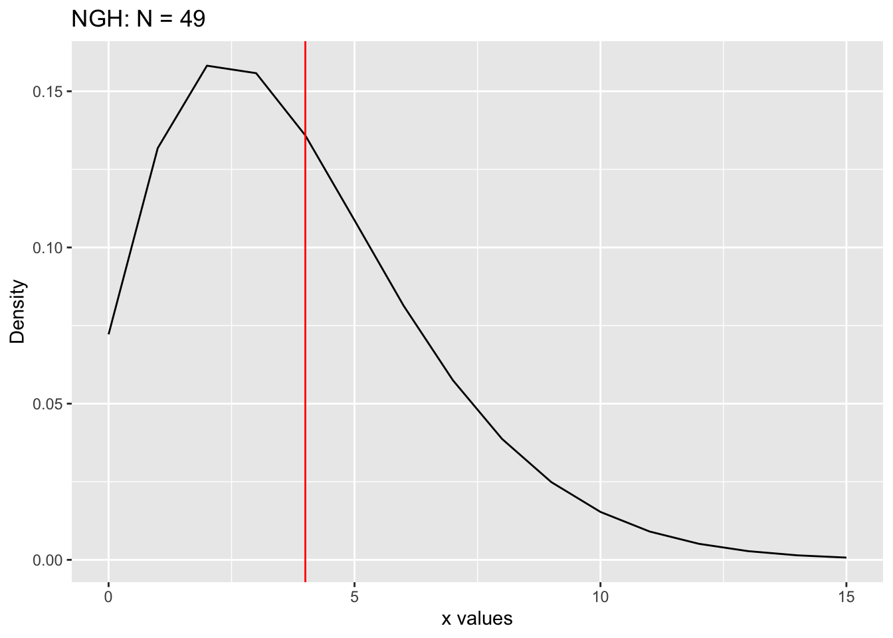
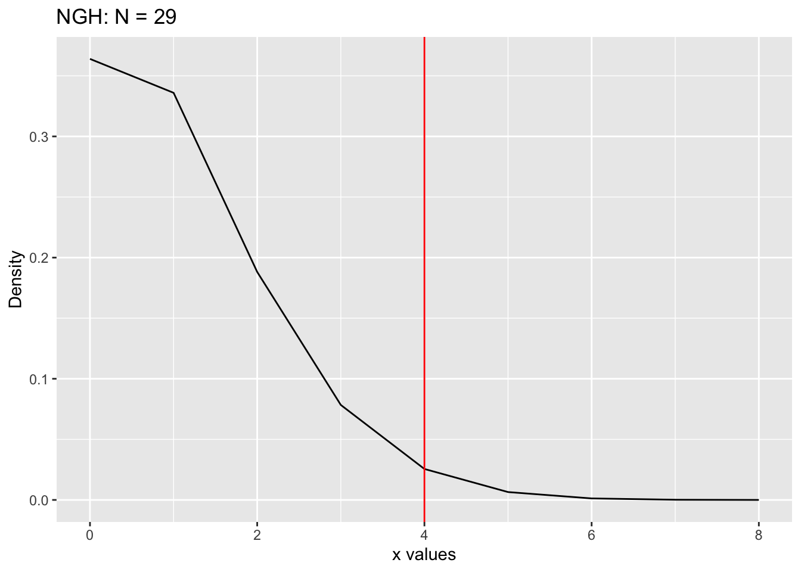
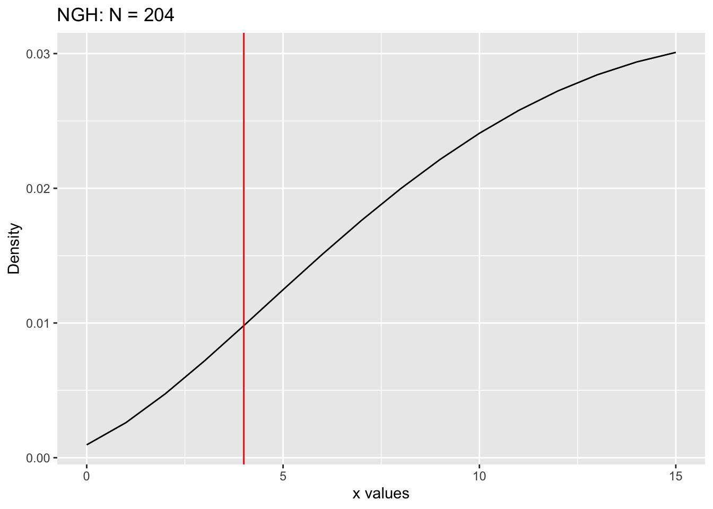
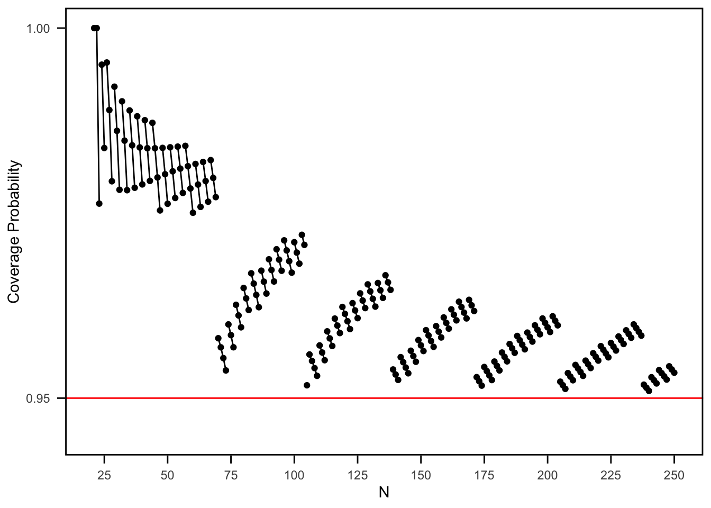
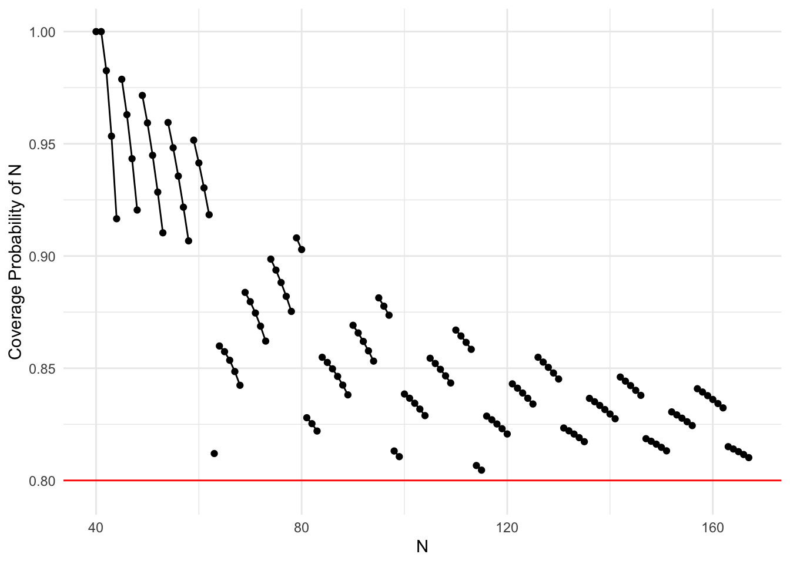

── Attaching core tidyverse packages ──────────────────────── tidyverse 2.0.0 ──
✔ dplyr 1.1.4 ✔ readr 2.1.5
✔ forcats 1.0.0 ✔ stringr 1.5.1
✔ ggplot2 3.5.1 ✔ tibble 3.2.1
✔ lubridate 1.9.4 ✔ tidyr 1.3.1
✔ purrr 1.0.2
── Conflicts ────────────────────────────────────────── tidyverse_conflicts() ──
✖ dplyr::filter() masks stats::filter()
✖ dplyr::lag() masks stats::lag()
✖ purrr::rdunif() masks extraDistr::rdunif()
ℹ Use the conflicted package (<http://conflicted.r-lib.org/>) to force all conflicts to become errors
source('../functions.R', encoding ='UTF-8')
Testing: m = 3, x = 4, M = 21, Confidence Level = 0.95
Point Estimate of N
# N = 49: Point Estimate of Nm =3x =4N =49M =21ngh_pmf_vec <-Vectorize(ngh_pmf)data =data.frame(x =seq(0, 15))data$y =ngh_pmf_vec(x = data$x, N = N, M = M, m = m)ggplot(data, aes(x = x, y = y)) +geom_line() +geom_vline(xintercept = x, color ="red") +ggtitle(paste("NGH: N =", N)) +xlab("x values") +ylab("Density")

Lower Bound
# Lower Bound# N = 29: Area to the right is just over (not under) 0.025 (alpha = 0.05)# Note: using area right for lower bound (used area left for lower bound for M unknown)m =3x =4N =29M =21ngh_pmf_vec <-Vectorize(ngh_pmf)data =data.frame(x =seq(0, 15))data$y =ngh_pmf_vec(x = data$x, N = N, M = M, m = m)ggplot(data, aes(x = x, y = y)) +geom_line() +geom_vline(xintercept = x, color ="red") +ggtitle(paste("NGH: N =", N)) +xlab("x values") +ylab("Density")

area_left =ngh_cdf(x = x, N = N, M = M, m = m, lower_tail =TRUE)area_right =ngh_cdf(x = x -1, N = N, M = M, m = m, lower_tail =FALSE)#print(paste("Area to the left is:", area_left))print(paste("Area to the right is:", area_right))
[1] "Area to the right is: 0.0334806955496613"
Upper Bound
# Upper Bound# N = 204: Area to the left is just over (not under) 0.025 (alpha = 0.05)# Note: using area left for upper bound (used area right for upper bound for M unknown)m =3x =4N =204M =21ngh_pmf_vec <-Vectorize(ngh_pmf)data =data.frame(x =seq(0, 15))data$y =ngh_pmf_vec(x = data$x, N = N, M = M, m = m)ggplot(data, aes(x = x, y = y)) +geom_line() +geom_vline(xintercept = x, color ="red") +ggtitle(paste("NGH: N =", N)) +xlab("x values") +ylab("Density")

area_left =ngh_cdf(x = x, N = N, M = M, m = m, lower_tail =TRUE)area_right =ngh_cdf(x = x -1, N = N, M = M, m = m, lower_tail =FALSE)print(paste("Area to the left is:", area_left))
[1] "Area to the left is: 0.0252929880843653"
#print(paste("Area to the right is:", area_right))
Confidence Interval Function
CI_Analog_CP_N_Unknown <-function(M, m, conf_level =0.95, max_N =1000) { target_probability = (1- conf_level) /2 max_x = max_N - M results =data.frame(x =0:max_x, lower_bound =NA, upper_bound =NA) previous_upper_bound =0for (xi in0:max_x) { lower_bound = M + xi# Find lower boundfor (N in (M + xi):(M + max_x)) { area_right =ngh_cdf(x = xi -1, N = N, M = M, m = m, lower_tail =FALSE)if (isTRUE(all.equal(area_right, target_probability))) { lower_bound = Nbreak } elseif (area_right > target_probability) { lower_bound = Nbreak } } upper_bound = lower_bound# Find upper boundfor (N in (lower_bound):(M + max_x)) { area_left =ngh_cdf(x = xi, N = N, M = M, m = m, lower_tail =TRUE)if (isTRUE(all.equal(area_left, target_probability))) { upper_bound = Nbreak } elseif (area_left < target_probability) { upper_bound = N -1break } }# Stop the iteration if the upper bound starts decreasing (because of max_N)if (upper_bound < previous_upper_bound) {break }# Update the previous upper bound for the next iteration previous_upper_bound = upper_bound# Store the results results[xi +1, "lower_bound"] = lower_bound results[xi +1, "upper_bound"] = upper_bound }# Filter out any rows where the upper bound is invalid results <- results[!is.na(results$upper_bound), ]return(results)}
CI_Analog_CP_N_Unknown_vec <-function(M, m, conf_level =0.95, max_N =1000) { target_probability <- (1- conf_level) /2 max_x <- max_N - M x_values <-seq.int(0, max_x) lower_bounds <-rep(NA, length(x_values)) upper_bounds <-rep(NA, length(x_values)) previous_upper_bound <-0for (i inseq_along(x_values)) { xi <- x_values[i]# Initialize lower_bound lb <- M + xi# Find lower boundfor (N_val inseq.int(M + xi, M + max_x)) { area_right <-ngh_cdf(x = xi -1, N = N_val, M = M, m = m, lower_tail =FALSE)if (isTRUE(all.equal(area_right, target_probability)) || (area_right > target_probability)) { lb <- N_valbreak } }# Initialize upper_bound ub <- lb# Find upper boundfor (N_val inseq.int(lb, M + max_x)) { area_left <-ngh_cdf(x = xi, N = N_val, M = M, m = m, lower_tail =TRUE)if (isTRUE(all.equal(area_left, target_probability))) { ub <- N_valbreak } elseif (area_left < target_probability) { ub <- N_val -1break } }# Stop if the upper bound starts decreasingif (ub < previous_upper_bound) {# Mark the rest as NA and breakbreak } previous_upper_bound <- ub lower_bounds[i] <- lb upper_bounds[i] <- ub }# Build final results results <-data.frame(x = x_values,lower_bound = lower_bounds,upper_bound = upper_bounds )# Filter out rows where upper_bound is NA results <- results[!is.na(results$upper_bound), ]return(results)}
coverage_prob_ACP_N_unknown <-function(M, N, m, conf_level =0.95, max_N =1000) { found_N_in_last_CI <-TRUEwhile (found_N_in_last_CI) {# Calculates all confidence intervals ci_results <-CI_Analog_CP_N_Unknown(M, m, conf_level, max_N)# Get the confidence interval of the last x last_x_ci <- ci_results[nrow(ci_results), ]# Check if N is within the last x's confidence intervalif (N >= last_x_ci$lower_bound & N <= last_x_ci$upper_bound) {# If N is still in the CI, increase max_N and try again max_N <- max_N +100 } else {# Stop increasing if N is not in the last x's CI anymore found_N_in_last_CI <-FALSE } }# Once max_N is large enough, continue with the original calculation ci_results <-CI_Analog_CP_N_Unknown(M, m, conf_level, max_N)# Finds all x's where N is in the confidence interval covered_x <- ci_results %>%filter(lower_bound <= N & upper_bound >= N) %>%pull(x)if (length(covered_x) ==0) {return(data.frame(N = N, coverage_prob =NA, min_x =NA, max_x =NA)) }# Finds the min and max of covered x's to know which lines to connect in plot min_x <-min(covered_x, na.rm =TRUE) max_x <-max(covered_x, na.rm =TRUE)# Sums the probabilities (pmf's) of all x's where N is in the CI total_prob <-sum(unlist(lapply(covered_x, function(x) ngh_pmf(x, N, M, m))))return(data.frame(N = N, coverage_prob = total_prob, min_x = min_x, max_x = max_x))}
coverage_prob_ACP_N_unknown_vec <-function(M, N, m, conf_level =0.95, max_N =1000) { found_N_in_last_CI <-TRUE# Keep increasing max_N until N is no longer in the last CIwhile (found_N_in_last_CI) { ci_results <-CI_Analog_CP_N_Unknown_vec(M, m, conf_level, max_N) last_x_ci <- ci_results[nrow(ci_results), ]if (N >= last_x_ci$lower_bound && N <= last_x_ci$upper_bound) { max_N <- max_N +100 } else { found_N_in_last_CI <-FALSE } }# Then compute final coverage probability ci_results <-CI_Analog_CP_N_Unknown_vec(M, m, conf_level, max_N) covered_x <- ci_results %>% dplyr::filter(lower_bound <= N & upper_bound >= N) %>% dplyr::pull(x)if (length(covered_x) ==0) {return(data.frame(N = N, coverage_prob =NA, min_x =NA, max_x =NA)) } min_x <-min(covered_x) max_x <-max(covered_x) total_prob <-sum(sapply(covered_x, function(x_val) ngh_pmf(x_val, N, M, m)) )return(data.frame(N = N, coverage_prob = total_prob, min_x = min_x, max_x = max_x))}
Testing: M = 21, m = 3, Confidence Level = 0.95
coverage_prob_ACP_N_unknown(M =21, N =50, m =3, conf_level =0.95, max_N =1000)
N coverage_prob min_x max_x
1 50 0.9762636 0 10
coverage_prob_ACP_N_unknown_vec(M =21, N =50, m =3, conf_level =0.95, max_N =1000)
Rows: 230 Columns: 5
── Column specification ────────────────────────────────────────────────────────
Delimiter: ","
dbl (5): N, coverage_prob, min_x, max_x, group
ℹ Use `spec()` to retrieve the full column specification for this data.
ℹ Specify the column types or set `show_col_types = FALSE` to quiet this message.
# Create a group column for consistent min_x and max_x# The group column assigns a unique group number whenever there is a change in min_x or max_x values# cumsum is used to create a cumulative sum that increments the group number whenever there is a# change in min_x or max_xcoverage_df = coverage_df %>%mutate(group =cumsum(c(1, diff(min_x) !=0|diff(max_x) !=0)))ggplot(coverage_df, aes(x = N, y = coverage_prob, group = group)) +geom_line() +geom_point() +labs(x ="N", y ="Coverage Probability") +geom_hline(yintercept = conf_level, color ="red") +scale_y_continuous(breaks =c(0.95, 1), limits =c(conf_level -0.005, 1)) +scale_x_continuous(breaks =seq(25, 250, by =25)) +theme_minimal() +theme(panel.grid.major =element_blank(),panel.grid.minor =element_blank(),panel.border =element_rect(color ="black", fill =NA, size =1),axis.ticks =element_line(size =0.5),axis.ticks.length =unit(2, "mm"),axis.text.x =element_text(margin =margin(t =5)),axis.text.y =element_text(margin =margin(r =5)))
Warning: The `size` argument of `element_line()` is deprecated as of ggplot2 3.4.0.
ℹ Please use the `linewidth` argument instead.
Warning: The `size` argument of `element_rect()` is deprecated as of ggplot2 3.4.0.
ℹ Please use the `linewidth` argument instead.

ggplot(coverage_df, aes(x = N, y = coverage_prob, group = group)) +geom_line(color ="#3c5366") +geom_point(color ="#3c5366") +labs(x ="N", y ="Coverage Probability", title ="Coverage Probability Plot for Analog to Clopper-Pearson Method") +geom_hline(yintercept = conf_level, color ="#ee6c4d", linetype ="dashed") +scale_y_continuous(breaks =c(0.95, 1), limits =c(conf_level -0.005, 1)) +scale_x_continuous(breaks =seq(25, 250, by =25)) +theme_minimal() +theme(legend.position ="none",panel.background =element_rect(fill ="#ecf6fa", color =NA), plot.background =element_rect(fill ="#ecf6fa", color =NA), panel.grid.major =element_blank(),panel.grid.minor =element_blank(),panel.border =element_rect(color ="#21272c", fill =NA, size =1),axis.ticks =element_line(size =0.5),axis.ticks.length =unit(2, "mm"),axis.text.x =element_text(margin =margin(t =5)),axis.text.y =element_text(margin =margin(r =5)),axis.title =element_text(color ="#21272c"),plot.title =element_text(color ="#21272c") )
Plot for interplay between a cpf and resulting intervals
CI_Analog_CP_N_Unknown(M =40, m =5, conf_level =0.80)
max_N =250M =40m =5conf_level =0.80N_values = M:167coverage_df =do.call(rbind, lapply(N_values, function(N) coverage_prob_ACP_N_unknown(M, N, m, conf_level, max_N)))# Create a group column for consistent min_x and max_x# The group column assigns a unique group number whenever there is a change in min_x or max_x values# cumsum is used to create a cumulative sum that increments the group number whenever there is a# change in min_x or max_xcoverage_df = coverage_df %>%mutate(group =cumsum(c(1, diff(min_x) !=0|diff(max_x) !=0)))ggplot(coverage_df, aes(x = N, y = coverage_prob, group = group)) +geom_line() +geom_point() +labs(x ="N", y ="Coverage Probability of N") +geom_hline(yintercept = conf_level, color ="red") +scale_x_continuous(limits =c(40, 167)) +scale_y_continuous(limits =c(conf_level -0.005, 1)) +theme_minimal()

ci_results =CI_Analog_CP_N_Unknown(M, m, conf_level) %>%filter(x <=6)y_axis =seq(from =0.78, by =-0.02, length.out =7)ci_results$y_axis = y_axis# Create the plotggplot() +geom_line(data = coverage_df, aes(x = N, y = coverage_prob, group = group)) +geom_point(data = coverage_df, aes(x = N, y = coverage_prob, group = group)) +labs(x ="N", y ="Coverage Probability") +geom_hline(yintercept = conf_level, color ="red", linetype ="dashed") +scale_y_continuous(breaks =c(0.80, 1), limits =c(0.65, 1.015)) +scale_x_continuous(breaks =c(40, 50, 60, 70, 80, 90, 100, 110, 120, 130, 140, 150, 160, 170),limits =c(39, 170.1)) +theme_minimal() +theme(panel.grid.major =element_blank(),panel.grid.minor =element_blank(),panel.border =element_rect(color ="black", fill =NA, size =1),axis.ticks =element_line(size =0.5),axis.ticks.length =unit(2, "mm"),axis.text.x =element_text(margin =margin(t =5)),axis.text.y =element_text(margin =margin(r =5))) +annotate("text", x =39, y =1.014,label =paste0("0-0"), angle =0, hjust =0.5, vjust =1, size =3) +annotate("text", x =44.9, y =0.97,label =paste0("0-1"), angle =-75, hjust =0, vjust =1, size =3) +annotate("text", x =48.7, y =0.965,label =paste0("0-2"), angle =-75, hjust =0, vjust =1, size =3) +annotate("text", x =53, y =0.955,label =paste0("0-3"), angle =-75, hjust =0, vjust =1, size =3) +annotate("text", x =58, y =0.948,label =paste0("0-4"), angle =-70, hjust =0, vjust =1, size =3) +annotate("text", x =62.5, y =0.948,label =paste0("0-5"), angle =-65, hjust =0, vjust =1, size =3) +annotate("text", x =61, y =0.825,label =paste0("1-5"), angle =0, hjust =0, vjust =1, size =3) +annotate("text", x =66.5, y =0.87,label =paste0("1-6"), angle =-45, hjust =0, vjust =1, size =3) +annotate("text", x =71.5, y =0.89,label =paste0("1-7"), angle =-45, hjust =0, vjust =1, size =3) +annotate("text", x =76.7, y =0.905,label =paste0("1-8"), angle =-45, hjust =0, vjust =1, size =3) +annotate("text", x =80, y =0.923,label =paste0("1-9"), angle =-45, hjust =0, vjust =1, size =3) +annotate("text", x =82.5, y =0.845,label =paste0("2-9"), angle =-45, hjust =0, vjust =1, size =3) +annotate("text", x =87, y =0.868,label =paste0("2-10"), angle =-45, hjust =0, vjust =1, size =3) +annotate("text", x =92.5, y =0.88,label =paste0("2-11"), angle =-45, hjust =0, vjust =1, size =3) +annotate("text", x =96.5, y =0.895,label =paste0("2-12"), angle =-45, hjust =0, vjust =1, size =3) +annotate("text", x =97.5, y =0.83,label =paste0("3-12"), angle =-30, hjust =0, vjust =1, size =3) +annotate("text", x =101.5, y =0.852,label =paste0("3-13"), angle =-30, hjust =0, vjust =1, size =3) +annotate("text", x =106.5, y =0.868,label =paste0("3-14"), angle =-30, hjust =0, vjust =1, size =3) +annotate("text", x =111, y =0.88,label =paste0("3-15"), angle =-30, hjust =0, vjust =1, size =3) +annotate("text", x =114, y =0.825,label =paste0("4-15"), angle =-30, hjust =0, vjust =1, size =3) +annotate("text", x =117, y =0.845,label =paste0("4-16"), angle =-25, hjust =0, vjust =1, size =3) +annotate("text", x =122, y =0.857,label =paste0("4-17"), angle =-25, hjust =0, vjust =1, size =3) +annotate("text", x =127, y =0.868,label =paste0("4-18"), angle =-25, hjust =0, vjust =1, size =3) +annotate("text", x =131.5, y =0.838,label =paste0("5-19"), angle =-20, hjust =0, vjust =1, size =3) +annotate("text", x =137, y =0.85,label =paste0("5-20"), angle =-20, hjust =0, vjust =1, size =3) +annotate("text", x =143, y =0.86,label =paste0("5-21"), angle =-20, hjust =0, vjust =1, size =3) +annotate("text", x =147, y =0.833,label =paste0("6-22"), angle =-15, hjust =0, vjust =1, size =3) +annotate("text", x =152.5, y =0.8435,label =paste0("6-23"), angle =-15, hjust =0, vjust =1, size =3) +annotate("text", x =158, y =0.853,label =paste0("6-24"), angle =-15, hjust =0, vjust =1, size =3) +annotate("text", x =163, y =0.83,label =paste0("7-25"), angle =-15, hjust =0, vjust =1, size =3) +geom_errorbarh(data = ci_results, aes(y = y_axis, xmin = lower_bound, xmax = upper_bound)) +geom_label(aes(x =49.75, y =0.785, label ="CI(0)"), color ="black", fill ="white", label.size =0.4, size =2.5, hjust =0, vjust =1) +geom_label(aes(x =59.25, y =0.765, label ="CI(1)"), color ="black", fill ="white", label.size =0.4, size =2.5, hjust =0, vjust =1) +geom_label(aes(x =69.75, y =0.745, label ="CI(2)"), color ="black", fill ="white", label.size =0.4, size =2.5, hjust =0, vjust =1) +geom_label(aes(x =79.75, y =0.725, label ="CI(3)"), color ="black", fill ="white", label.size =0.4, size =2.5, hjust =0, vjust =1) +geom_label(aes(x =90.75, y =0.705, label ="CI(4)"), color ="black", fill ="white", label.size =0.4, size =2.5, hjust =0, vjust =1) +geom_label(aes(x =101.25, y =0.685, label ="CI(5)"), color ="black", fill ="white", label.size =0.4, size =2.5, hjust =0, vjust =1) +geom_label(aes(x =111.75, y =0.665, label ="CI(6)"), color ="black", fill ="white", label.size =0.4, size =2.5, hjust =0, vjust =1)